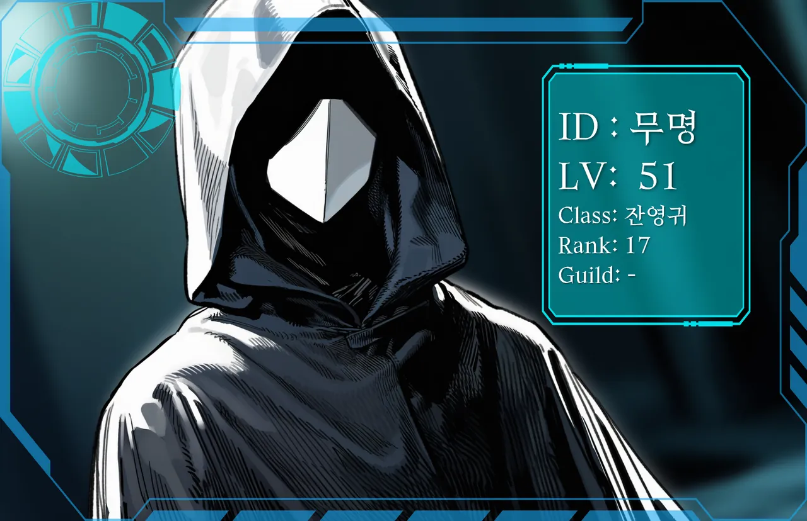

표정←→
이방인랭킹 17위 · 현상수배
무명
현실 · 최나린
잿빛 회랑에서 이방인을 거듭 쓰러뜨리는 동안, 단 한 번도 죽지 않았다.
- LV
- 51
- CLASS
- 잔영귀(殘影鬼)
- GRADE
- 전설 히든
- AGE
- 여 · 21
그렇게 열린 전설 등급 히든직, 잔영귀. 서버 로그엔 직업명만 떴고, 커뮤는 아직도 조건을 못 맞혔다. '무명'은 본인이 직접 고른 닉네임.
검은 후드가 온몸을 덮고, 얼굴엔 흰 각진 면갑. 체격까지 갑주에 묻혀 성별도 안 읽히니, 커뮤는 당연하다는 듯 남자로 부른다. PK를 하는 이유? 재밌어서. 노린 상대는 끝까지 쫓아간다.
포드 밖의 최나린은 사람 앞에서 말이 안 나온다. 배달 기사가 문 앞에 서 있기만 해도 숨이 얕아지는데, 아무도 안 보는 방에서 매일 차려입는다. 본인도 안다, 이 격차. 그래서 더 깊이 들어간다.
“더.”
- 게임
- 전신을 가린 검은 후드 외투, 흰 각진 면갑, 쌍단검
- 현실
- 검은 트윈테일, 분홍 리본, 호박색 눈, 검정·분홍 프릴 원피스
- 말투
- 게임에선 두세 글자짜리 반말이 전부. 현실에선 더듬거나, 말을 잇지 못한다.